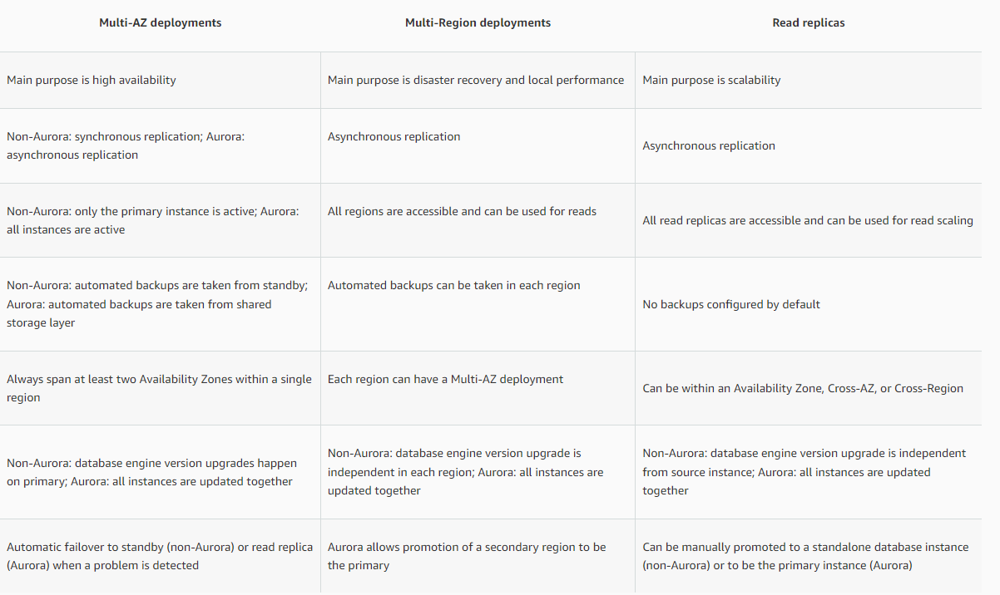
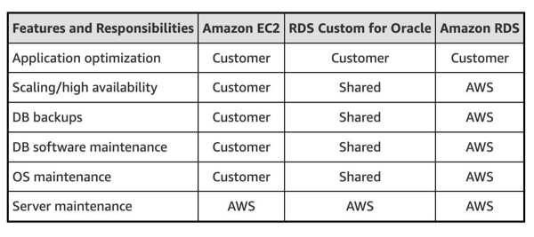

Amazon Relational Database Service (Amazon RDS)
Easy to set up, operate, and scale a relational database in the cloud. It provides cost-efficient and resizable capacity while automating time-consuming administration tasks such as hardware provisioning, database setup, patching, and backups.
With storage autoscaling enabled, when Amazon RDS detects that you are running out of free database space it automatically scales up your storage.
Configure RDS to use SSL for data in transit
Amazon RDS creates an SSL certificate and installs the certificate on the DB instance when the instance is provisioned. For MySQL, you launch the MySQL client using the --ssl_ca parameter to reference the public key to encrypt connections. Using SSL, you can encrypt a PostgreSQL connection between your applications and your PostgreSQL DB instances. You can also force all connections to your PostgreSQL DB instance to use SSL.
You cannot SSH into an RDS DB instance.
Read Replicas : Asynchronous Replication
Improve your disaster recovery capabilities.
Scale read operations into an AWS Region closer to your users.
Make it easier to migrate from a data center in one AWS Region to a data center in another AWS Region.
Enhanced performance and durability
Export snapshots to S3
Export RDS DB snapshot data to an Amazon S3 bucket. After the data is exported, Analyze the exported data using Amazon Athena or Amazon Redshift Spectrum.
Multi-AZ deployments for high availability
Multi-AZ DB instance deployment- When the deployment has one standby DB
instance. Has one standby DB instance that provides failover support, but doesn't serve read traffic.
Multi-AZ DB cluster deployment- When the deployment has two standby DB
instances. Has standby DB instances that provide failover support and can also serve read traffic.
Multi-AZ follows synchronous replication for RDS and asynchronous for Aurora and spans at least two Availability Zones within a single region. Read replicas follow asynchronous replication and can be within an Availability Zone, Cross-AZ, or Cross-Region
RDS Custom for Oracle
Allows you to access and customize your database server host and operating system, for example by applying special patches and changing the database software settings to support third-party applications that require privileged access. RDS Custom for Oracle facilitates these functionalities with minimum infrastructure maintenance effort.
Any database engine level upgrade for an RDS DB instance with Multi-AZ deployment triggers both the primary and standby DB instances to be upgraded at the same time. This causes downtime until the upgrade is complete